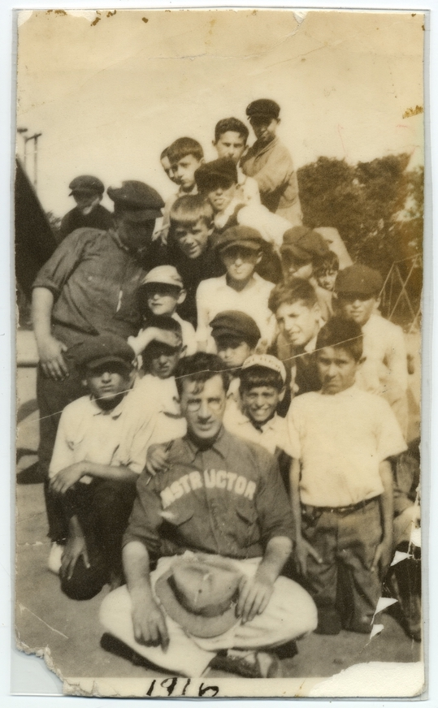
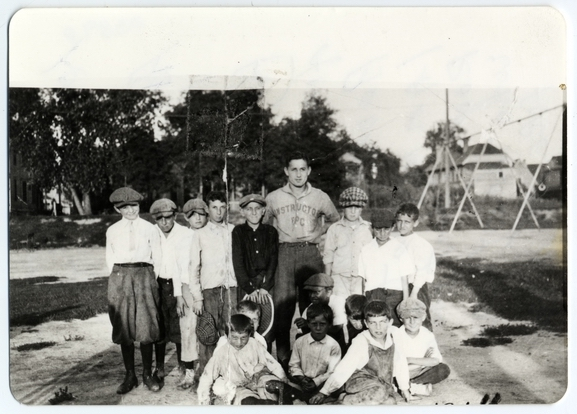
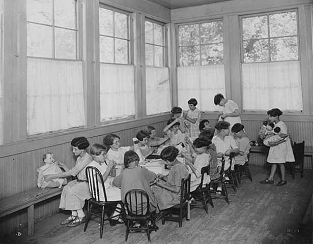
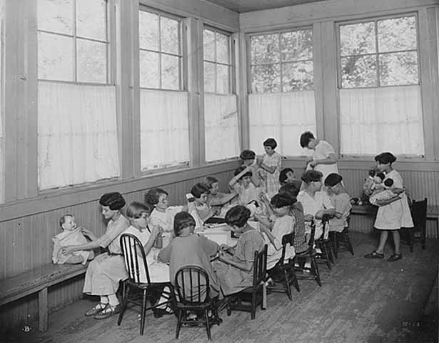

x
FEBRUARY 22, 2019
In 1919, the man who brought racial covenants to Minneapolis published an advertisement in the Minneapolis Tribune.

Advertisement placed by Edmund G. Walton in the Minneapolis Morning Tribune, January 12, 1919. The anti-Semitic restriction is located in the final paragraph.
Real estate developer Edmund G. Walton issued "an appeal to the instincts of those about to marry." He offered a "Lake of the Isles Bargain." The development featured "beautiful" lots already outfitted with "curb and gutter, stone sidewalk, city water, gas and electricity." And they were also racially restricted. These housing sites in this development could not "be conveyed mortgaged or leased to any person or persons of Chinese, Japanese, Moorish, Turkish, Negro, Mongolian, Semitic or African blood or descent."
There is no way to know how potential buyers responded. But local Jewish leaders were outraged. "Jews have known all along that [the Walton crew] has no particular liking for them," the editorial board of the American Jewish World wrote a few days later. But "Jews here," it declared, "have acquired the manly art of self-defense." Jews should "retaliate and hit back."
This call to arms was likely authored by Samuel Deinard, the editor of the American Jewish World. Deinard called on Jews to boycott publications that published offensive text. And he also likely recruited his friend Emanuel Cohen to take this protest to the State Capitol.
In the weeks that followed, Cohen lobbied legislators to pass a bill that banned religious discrimination in real estate transactions. This bill became a law with the unanimous approval of legislators in April 1919.
Thanks in large part to this legislation, less than one percent of the covenants identified by Mapping Prejudice contain anti-Semitic restrictions like the one advertised by Walton. The city's palpable anti-Semitism was only rarely articulated in racially-restrictive deeds.
The covenants bill was an unlikely civil rights victory at a moment of intensifying animus against Jews and other people who were regarded as not white. Cohen was able to raise this issue and be heard by lawmakers thanks to the relationships he had built during his long career as an attorney and civic leader.
Born in Pennsylvania, Cohen graduated from Williams College before settling in Minneapolis in 1886. He joined the law firm of Kitchel, Cohen and Shaw. That same year he married Nina Morais, the daughter of a Philadelphia rabbi.
Emanuel and Nina became a Minneapolis power couple. Nina worked for women's suffrage and devoted her energies to an array of Progressive Era women's organizations. She led the Council of Jewish Women and was an active force in the Minneapolis Women's Club, the consumers' league and the Minneapolis Improvement League, which fought for pure water, clean streets and playgrounds. She taught extension courses in literature at the Athenaeum, which would later become the Minneapolis Public Library. Her husband served on the board of directors of this institution. He also taught religious school at Shaari Tov, advocated for better recreational opportunities and promoted the idea of a Jewish center in Minneapolis. He raised money for Jewish refugees and Jewish relief. He also was a major contributor to the Minneapolis Orchestra. He was invited to join the exclusive Minneapolis Club and the Minneapolis Board of Trade. He was appointed to the city’s first Charter Commission.
The Cohens were at home in the city's elite circles. And for two years they actually lived with a man who would become mayor. Until 1900, Nina and Emanuel shared a residence in the mansion district with David and Alice Jones.
Yet by World War I, the racial climate had shifted in Minneapolis. Walton's advertisement was just one of the harbingers of this change. The new civic consensus on Jews was articulated by the Minneapolis Journal which questioned whether Jews were "psychologically unfit to be citizens of an Anglo-Saxon state and society? Are they temperamentally and historically addicted to violent revolt and disdainful of orderly processes of persuasion and improvement?"
Cohen attacked this escalating anti-Semitism. He fought religious discrimination at the Minnesota State Legislature. And he complained to the Minneapolis Public Schools, which taught offensive texts and considered introducing Bible study to its curriculum.
Edmund Walton (died in April of 1919) and Emanuel Cohen died (in April of 1920) within a year of one another. The men provide a study in contrasts. The flamboyant Walton promoted himself in newspaper advertisements and well-publicized images. His name is emblazoned on subdivisions and streets. No photograph of Emmanuel Cohen seems to have survived.
But there are plenty of photographs of children in graduation gowns and sports uniforms at the Emanuel Cohen Center in North Minneapolis.


 

Boys from the Emanuel Cohen Center at Sumner Field; Minneapolis, Minnesota, U of M, UMJH archives.
Boys from the Emanuel Cohen Center at Sumner Field; Minneapolis, Minnesota, U of M, UMJH archives.
Emanuel Cohen Center pre-Kindergarten graduating class; Minneapolis, Minnesota, UMJH archives.
Girls with dolls at Emanuel Cohen House; MHS archives.
When Cohen died in 1920, he bequeathed a large sum of money to the local Associated Jewish charities. This funded the establishment of the Emanuel Cohen Center, which provided educational classes, recreation programs and health services in North Minneapolis for many decades. In 1963, the center moved to St. Louis Park. Today it is known as the Sabes Jewish Community Center.
This community center was the perfect culmination of a lifetime of service. The photographic record of the Emanuel Cohen Center demonstrates how the actions of one person can make a profound difference.
Yet the disturbing history of racial covenants in Minneapolis raises the question of whether this civic leader could have bent the "arc of moral universe" even further. What if Cohen had crafted this 1919 legislation to bar racial as well as religious discrimination in real estate transactions? Would Minneapolis still have such yawning racial disparities?
Sources:
"Real Estate Mart," Minneapolis Tribune, January 12, 1919; "Petty Souls," Editorial, The American Jewish World, January 17, 1919; W. Gunther Plaut, The Jews in Minnesota: The First Seventy-Five Years (New York: American Jewish Historical Society, 1959), 148, 270; Charles J. Cohen, “Emanuel Cohen,” American Jewish Historical Society,1922, No. 28, page 266, (pages 266-268), Published by The John Hopkins University Press Stable URL: https://www.jstor.org/stable/43059400Accessed: 07-02-2019 22:37 UTC; “On The Library Shelves,” Minneapolis Tribune, October 21, 1894; “Women Lecturers,” Minneapolis Tribune, December 30, 1894 ; “In and Around the City,” The Irish Standard, February 9, 1895; “In Personal Vein” Minneapolis Tribune, October 7, 1897; “Woman’s Interests,” Minneapolis Tribune, December 17, 1897; “Charter Commissioners Dine,” St. Paul Globe, January 7, 1898; “C.A. Pillsbury As Host,” Minneapolis Tribune, January 7, 1898; “They Talked Charter,” Minneapolis Tribune, February 24, 1898; A Consumer’s League in Process of Formation,” Minneapolis Tribune, January 18, 1900; “Lectures on Dante,” Minneapolis Journal, December 21, 1901; “Spotless Town Folk Now Well Organized," Minneapolis Journal, May 6, 1906; Ruby Danenbaum, History of the Jews of Minneapolis and St. Paul, Extracted from the Reform Advocate, November 16, 1907, (Chicago: Bloch and Newman, 1907), 29; “Prospectus About Ready,” Minneapolis Morning Tribune, October 3, 1909; “Relief Work for Jews Begun,” Minneapolis Journal, November 9, 1914; “Delay in Shipping Flour is Explained,” Minneapolis Morning Tribune, December 16, 1914; Sentiment Found Against Outsider, Then Board Acts,” Minneapolis Morning Tribune, January 31, 1917; “Jew and Lutheran Oppose Bible Study,” Minneapolis Morning Tribune, February 27, 1917; “Drive of $100,000 for Jewish Refugees Will Begin Tonight,” Minneapolis Morning Tribune, April 29, 1918; “Memorial Service to be Held for Mrs. E. Cohen,” Minneapolis Morning Tribune, February 19, 1919; “Our Intellectual Radicals,” Minneapolis Journal, May 25, 1919; Journal of the House of the Forty-First Session of the Legislature, page 1088; Journal of the House of the Forty-First Session of the Legislature, page 1179; Journal of the Senate of the Forty-First Session of the Legislature, page 1085; “Deceased–Emanuel Cohen,” American Jewish World, April 16, 1920. William C. Edgar, The Minneapolis Club History: A Review of Its History from 1883-1920 by an Old Member (reprinted 1974, Minneapolis: Minneapolis Club), 179, lists Emanual [sic] Cohen 1920 in the Memoriam section.